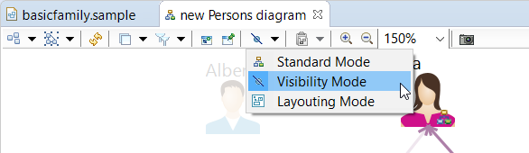

- Management of hidden diagram elements
- Organization of popup menus
- First column width
- Migration from previous Sirius versions
- New EPL licence version
- More...
Management of hidden diagram elements
On diagrams a new mode allows to visualize elements that has been hidden manually. When this mode is activated, hidden elements (nodes, containers, edges) appear lighter on the diagram.

They can be made visible again by just double-clicking on them.
Coming with this evolution, a new dropdown menu gathering the layouting, visibility and standard mode has been added to the tabbar. The standard mode corresponds to a diagram editor without the layouting and visibility mode activated.
This blog post describes this new feature.
Organization of popup menus
The creator of a Sirius-based modeling tool can better manage contextual popup menus by using groups.
In addition to specific menus in the main popup menu, now it is also possible to group actions (displayed under a separator) and to create menus on several sub-levels.

This blog post describes this new feature.
First column width
The first column of a table (default header column) can be hidden by default by specifying value -1 in the Initial Header Column Width field of Edition table representation.

This blog post describes this new feature.
Migration from previous Sirius versions
When opening a modeling project created with an older version of Sirius, the project was automatically and transparently migrated to the current version.
Now, since Sirius 6.1, a preference has been added to ask the user if he wants to save session resources after an automatic migration.
New EPL licence version
Sirius licence has been upgrade to Eclipse Public License 2.0.
Changes are explained in this FAQ
And even more
A comprehensive list of Sirius 6.1 changes can be found in the Official Release Notes.
Previous versions
Read What's new in Sirius 6.0 to see the new and noteworthy features of previous version.